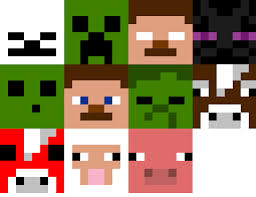

Register
Register the family
Create a family account. You will have access to family metrics and progress

kids earn XP (experience points) as they complete tasks and can level- up for rewards.
Create a family account. You will have access to family metrics and progress Add your children to the family account, they will then
be able to login to their personal account and start tracking
Add developmentally apropriate chores to your child's profile As a due date approaches the color of the chore changes (red, yellow and green traffic lights).
Game-ify it, each chore is worth 10 points some are worth more, the most points at the end of
the week checked off.
Checking off chores quickly gives you more points.
ChoreScore - each chore has the same "baseline" points value,
but completing chores quickly allows "Child" to earn "Bonus Points",
and CleanStreaks - a metric to track how consistently each "Child"
completes their assigned chores. (web & mobile)
Register
Register the family

Add the children
Allocate chores
from a list of common chores or customised
thenticated "Parent" can randomly assign chores to each "Child"
added to the "Family" (web)

Gameify and Incentivise

Take a picture of the item--get led to a YouTube page discussing topics surrounding the item. Make it fun for my kids to pitch in on the process of keeping our chores in tact.
and skills? Authenticated "Child" can check off completed tasks, and submit a photo of the completed chore (and optional comment) for manual approval, if required by "Parent". (mobile)
As a parent I can add kids to my 'family'
A kid can use this app on their parent's iPad or phone to see a list of the chores they've been assigned.
As a Kid I can see a list of the chores that have been assigned to me
As a parent I can assign chores to my children
Add a due date as to when the chore needs to be completed.
Kids can use the app to check off whether or not the task has been completed.
Parents can use the app to confirm whether or not the task has been indeed completed
Use our daily randomiser
pick up toys
throw away rubbish/recycling
dust
put laundry in basket
All earlier chores, plus:
clean room
make bed
wipe surfaces
feed and water pets
put laundry away
help put groceries away
empty small paper bins
water plants
Unload dishwasher.
fold laundry
meal prep
wipe down bathroom
vacuuming
make snacks/packed lunches/simple food
sweeping
weeding/ raking /light gardening
walking/ clean up after dog
load/empty dishwasher
putting out bins
All earlier chores, plus:
empty main bins
Load dishwasher
mopping
cook simple meal with supervision
babysitting
own laundry
ironing
mowing
wash car